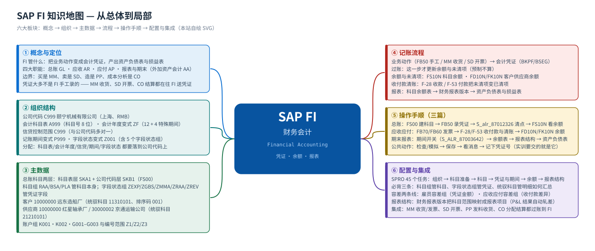
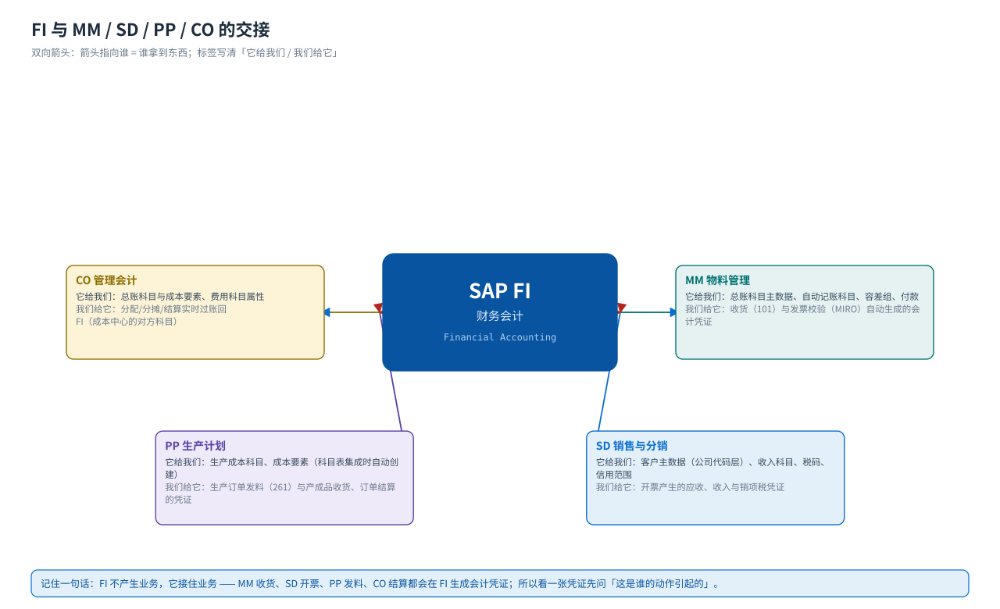
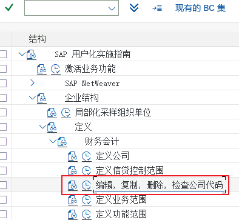

首页 · 课程地图与学习路线
FI 管什么 · 怎么学 · 学完能做什么
FI（财务会计，Financial Accounting）是 SAP 的「账房」：把采购、销售、生产这些业务动作翻译成会计凭证，更新科目余额与客户/供应商明细，最后出资产负债表和损益表。本站按「概念 → 组织 → 主数据 → 端到端记账流程 → 分步操作手顺 → SPRO 配置 → 实训」讲，每个环节都配教材原书的真实 SAP GUI 画面。
14页课程页数
45个任务教材 FI 全部任务，逐个走查
181步手顺步骤（含教材画面）
385处教材画面引用
学习路线：从总体到细节
① 概念FI 管什么、账从哪来→② 组织公司代码 / 科目表 / 变式→③ 主数据总账科目 / 客户 / 供应商→④ 流程业务动作 → 凭证 → 报表→⑤ 操作手顺总账 · 应收应付 · 期末→⑥ 配置SPRO 45 个任务→⑦ 实训五个动手任务→⑧ 自测30 题 · 合格 75%
建议的学法先看 概念 弄清「会计凭证是谁产生的、FI 的边界在哪里」，再按 组织 → 主数据 把坐标立起来；然后走一遍 端到端流程，明白业务动作如何变成分录；最后拿 总账、应收应付、期末报表 三篇当操作手册照着做，配置篇 是后台的完整索引。
模块地图
{kind=link}

六大板块
① 概念与定位FI 的四大职能（总账/应收/应付/报表）、五类对象、与 MM·SD·PP·CO 的分界、12 个常见误解
② 组织结构公司代码 / 会计科目表 / 会计年度变式 / 信贷控制范围 / 记账期间变式 / 字段状态变式，以及它们的分配
③ 主数据总账科目（科目表层＋公司代码层）、科目组与字段状态组、客户与供应商（三层 + 统驭科目）
④ 端到端流程业务动作（收货·开票·手工记账）→ 会计凭证 → 过账 → 余额与未清项 → 报表
⑤ 操作手顺三篇局部详解：总账（FS00/FB50/FS10N）、应收应付（FB70/FB60/F-28/F-53）、期末（期间与报表）
⑥ 配置与实训SPRO 45 个任务（IMG 路径 + 手顺 + 截图）、五个实训、30 题自测
集成关系：FI 是所有人的下游
{kind=link}

| 邻居模块 | 它给 FI（凭证/数据） | FI 给它 | 典型凭证/接口 |
|---|---|---|---|
| MM 物料管理 | 收货（101）与发票校验（MIRO）自动生成的会计凭证 | 总账科目主数据、自动记账科目（OBYC）、容差组、付款 | BKPF/BSEG；科目确定 BSX/WRX/GBB |
| SD 销售与分销 | 开票（VF01）产生的应收、收入、销项税凭证 | 客户主数据（公司代码层）、收入科目、税码、信用范围 | 凭证类型 RV/DR；客户余额 FD10N |
| PP 生产计划 | 生产订单发料（261）与产成品收货、订单结算的凭证 | 生产成本科目、成本要素（科目表集成时自动创建） | 41010101 生产成本-原材料消耗 |
| CO 管理会计 | 分配/分摊/结算实时过账回 FI（成本中心的对方科目） | 总账科目与成本要素、费用科目的成本要素属性 | CO 凭证与 FI 凭证一一对应（实时集成） |
一句话记住 FI 的位置FI 不「产生」业务，它「接住」业务：MM 的收货、SD 的开票、PP 的发料、CO 的结算都会在 FI 生成会计凭证。所以 FI 上手最快的方法是——先问「这张凭证是谁的动作引起的」。
教材场景（颐宁机械有限公司）
本站所有示例值都来自教材《S4.docx》FI 模块的画面（会计年度 2021、第 3 期间为主），不是标准值 —— 换到自己的系统请按页面里写的「怎么确认」核对。
| 对象 | 教材值 | 说明 |
|---|---|---|
| 公司代码 | C999 | 颐宁机械有限公司（城市：上海，货币 RMB，语言 ZH） |
| 会计科目表 | A999 | 任务 02 建；总账科目号长度 8 位 |
| 会计年度变式 | ZF | 任务 03 建；决定 12 个正常期间 + 4 个特殊期间 |
| 信贷控制范围 | C999 颐宁信贷控制范围 | 任务 04 建；公司代码与信贷控制范围多对一 |
| 记账期间变式 | P999 颐宁记账期间变式 | 任务 16 建、任务 17 分配给公司代码 |
| 字段状态变式 | Z001（公司代码 C999） | 任务 07 建；含 5 个字段状态组 |
| 字段状态组 | ZEXP 费用 · ZGBS 一般资产负债科目 · ZMMA 材料采购（GR/IR）· ZRAA 统驭科目 · ZREV 收入科目 | 字段状态组是会计科目的参数，控制凭证里辅助核算项 |
| 科目组 | RAA 统驭科目 11300000–21699999 · BSA 资产负债 · PLA 损益 | 任务 06；教材在 A999 科目表下建 |
| 留存收益科目 | 410901（画面显示 410901X / 410901） | 任务 09；年结时损益科目余额转入 |
| 关键科目号 | 10010101 现金 · 10020101 银行存款 · 11310101 应收账款 · 12010101 材料采购-GR/IR · 12430101 存货-产成品 · 21210101 应付账款 · 31010101 实收资本 · 31410101 利润分配-未分配利润 | 教材任务 10–13 在前台 FS00 建成的科目（另含 18 个损益科目） |
| 客户 | 10000000 远东造船厂（另有新益汽轮机厂、威力工贸公司） | 任务 29 FD01；客户编号范围 Z1 = 10000000–19999999 |
| 收货方客户 | 20000000 远东造船厂第三分公司 | 任务 30；Z2 = 20000000–29999999 |
| 供应商 | 10000000 红星轴承厂 · 10000001 长平铁工厂 · 20000000 思普机械设备进出口有限公司 · 30000000 上海市电力公司 · 30000001 佳音地产公司 · 30000002 京通运输公司 | 任务 31 FK01 |
| 金额场景 | 实收资本 2.800,00（画面 2.800,00，教材正文写 2 800 000）· 客户发票含税 58.000 · 部分收款场景发票 164.800 · 付款 5.600,00 | 读 SAP 数字先看格式：点=千位、逗号=小数 |
| 报表结果（2021） | 资产 223.680 · 货币资金 147.200 · 应收账款 76.480 · 本年利润 220.880（P+L） | 任务 45 资产负债表画面的实际数值 |
代表性画面（先建立整体印象）
下面 6 张是教材 FI 模块里最有代表性的画面；在 配置篇 与三个流程页里，同一批画面会带「画面 N」编号逐张展开。
{kind=link}



怎么用这个站
- 带「画面 N」编号的图 = 教材原书的 SAP GUI 实机截图（中文界面），图注里保留原图文件名，可回 Word 原稿逐张核对。
- 图注写「本站自绘 SVG」的 = 我们画的流程图/结构图/思维导图，用于讲清结构与顺序；图上的数值是课程场景值。
- 每页底部都有「其他模块」的入口；顶部横条可以在 MM / PP / FI / CO 与总览之间跳转。
- 配置篇的每个任务都给出「IMG 路径 + 手顺步骤 + 教材画面」，路径可以点击左侧小图标复制；教材任务 30（收货方主数据）原书没有手顺画面，配置篇末尾用标准做法补了一段并明确标注。
- 术语页有中英对照、事务码速查、常用表（BKPF/BSEG、SKA1/SKB1、BSID/BSIK…）与 45 个任务的总索引。